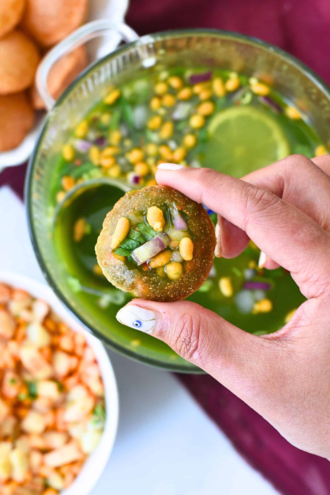

Panipuri Recipe

Description
Pani Puri is a popular Indian street food made with crispy hollow puris filled with spiced potato, chickpeas, and
tangy flavored water. It is a delicious combination of spicy, sweet, tangy, and crunchy flavors.
It is usually served as an evening snack and is enjoyed by people of all ages.
Ingredients
For the Puri
For the Filling
- 2 medium potatoes, boiled
- ½ cup boiled chickpeas
- 1 small onion, finely chopped
- 1 tablespoon coriander leaves, chopped
- ½ teaspoon red chilli powder
- ½ teaspoon chaat masala
- Salt to taste
For the Spicy Pani
- 1 cup fresh coriander leaves
- ½ cup fresh mint leaves
- 1–2 green chillies
- 1 teaspoon roasted cumin powder
- 1 teaspoon chaat masala
- 1 tablespoon lemon juice
- 1 teaspoon tamarind pulp
- Salt to taste
- 3–4 cups cold water
For the Sweet Chutney
- 2 tablespoons tamarind pulp
- 2 tablespoons jaggery
- ½ teaspoon roasted cumin powder
- A pinch of red chilli powder
- A pinch of salt
Steps
- Boil the potatoes and chickpeas. Peel and mash the potatoes.
- Mix the mashed potatoes, boiled chickpeas, chopped onion, coriander leaves, red chilli powder, chaat masala,
and salt in a bowl.
- To prepare the spicy pani, blend coriander leaves, mint leaves, and green chillies with a little water.
- Transfer the mixture to a large bowl and add roasted cumin powder, chaat masala, lemon juice, tamarind pulp, and salt.
- Add cold water and mix well. Adjust the seasoning according to your taste.
- To prepare the sweet chutney, mix tamarind pulp, jaggery, roasted cumin powder, red chilli powder, and salt.
- Make a small hole in the center of each puri.
- Fill each puri with the potato and chickpea mixture.
- Add a little sweet chutney and dip or fill the puri with spicy pani.
- Serve the pani puri immediately and enjoy while the puris are crispy.
Home